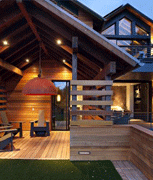
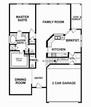
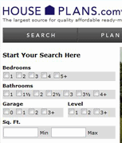
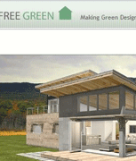

|

|
Unit #5 -Fooor Plans.
A.Kitchenbr B.Bathroom Using "Slabs " D.Georgian House E.Sketching Assignment #5 |

|
|

HousePlans.com
The largest source for quality affortable ready-made House plans.A great place to surf for space planning ideas.
learn More |
Objectives
Providing with all facilities for the residential building, it includes portico, dining & drawing hall, kitchen, bed room, study room, guest room, balcony, staircase with passage, path & w.c with proper specification. This project describes analysing and design of residential building. The proposed residential building is to be constructed at s.v.nagar, Puliyangudi. The area of the proposed building 438.9 sqm (G+1) will be constructed framed structure. The analysis of frames to compute the force and moment will be carried out with staad pro software. The analysis of structures was done by using staad pro software analysing as well as IS 456:2000 code of practice for plain and reinforced cement concrete.The structural members are like slabs, beams; columns are designed with limit state method using national building code and IS 456:2000 grade concrete and grade of steel are to be used. It also deals with the designing of septic tank and water tank. The project is to develop independent and creative thinking fundamental theoretical knowledge we obtained during the course of the study practical application of field. |

Green Floor Free Green .com offers both sponcerd and non Sponcered floor plans.Their goal is to provide the customers with free solution to their green architecture need. learn More |